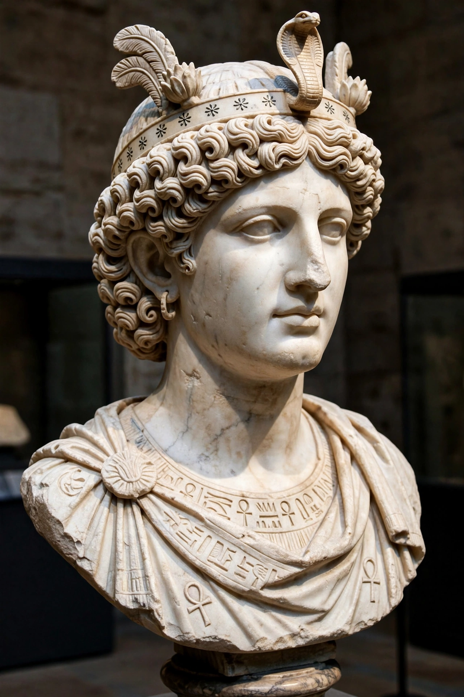

| Cleopatra VII Philopator | |
|---|---|
 | |
| Queen of the Ptolemaic Kingdom | 51–30 BC |
| Predecessor | Ptolemy XII Auletes |
| Successor | Ptolemy XV Caesarion (nominally) |
| Born | Early 69 BC, Alexandria, Egypt |
| Died | 10 August 30 BC (aged 39), Alexandria |
| Consorts | Ptolemy XIII; Ptolemy XIV; Mark Antony (partner) |
| Issue | Caesarion; Alexander Helios; Cleopatra Selene II; Ptolemy Philadelphus |
| Dynasty | Ptolemaic |
| Father | Ptolemy XII Auletes |
Cleopatra VII Philopator (Greek: Κλεοπάτρα Φιλοπάτωρ; early 69 BC – 10 August 30 BC) was queen of the Ptolemaic Kingdom of Egypt from 51 to 30 BC and its last active ruler. A member of the Ptolemaic dynasty founded by Ptolemy I Soter, a general of Alexander the Great, Cleopatra was a descendant of Macedonian Greek royalty, though she was the first Ptolemaic ruler to learn the Egyptian language and presented herself as the reincarnation of the goddess Isis.
Cleopatra became co-ruler with her father Ptolemy XII and, after his death in 51 BC, with her younger brother Ptolemy XIII, whom she married according to Egyptian custom. Driven from power by her brother's advisors, she raised an army in Syria. When Julius Caesar arrived in Alexandria in 48 BC pursuing Pompey, Cleopatra famously had herself smuggled into the palace — according to Plutarch, rolled in a carpet or laundry sack — and won Caesar's support. After Ptolemy XIII's death in the ensuing war, Caesar restored her to the throne with another brother, Ptolemy XIV. Cleopatra bore Caesar a son, Caesarion, and visited Rome in 46–44 BC. After Caesar's assassination in 44 BC, she returned to Egypt and had Ptolemy XIV killed, ruling jointly with Caesarion.
In 41 BC Cleopatra met Mark Antony at Tarsus, arriving in splendour aboard a gilded barge, and formed a political and personal alliance that produced three children. With Antony's backing she expanded her kingdom through the "Donations of Alexandria" (34 BC), which granted territories to her children and alarmed Rome. Antony's rival Octavian used propaganda portraying Cleopatra as a decadent Eastern seductress to declare war in 32 BC. On 2 September 31 BC, Octavian's forces under Agrippa defeated Antony and Cleopatra at the naval Battle of Actium; the pair fled to Egypt.
As Octavian advanced on Alexandria in 30 BC, Antony died by his own hand. Cleopatra, seeking to avoid being displayed in Octavian's triumph, also died — traditionally by the bite of an asp, though ancient sources offer alternative accounts involving poison. Caesarion was executed, Egypt was annexed as a Roman province, and Cleopatra's surviving children by Antony were raised in Rome; her daughter Cleopatra Selene became queen of Mauretania.
Cleopatra was highly educated and, per Plutarch, spoke as many as nine languages. Roman propaganda shaped her later image as a femme fatale, but historians credit her as an astute ruler who preserved Egypt's independence for two decades amid Roman civil wars. She remains an enduring cultural icon — in Shakespeare's Antony and Cleopatra, in art, opera, and film — and her tomb has never been found.
This article is a recreation from memory in the style of Wikipedia.